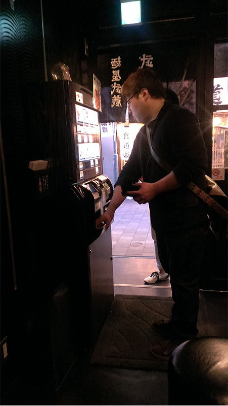

上野一蘭拉面
- 地點:日本上野車站附近
- 時間:2014年4月26日
- 個人評價:四顆星
- 日本餐廳網站
說明
我們一到目的地，就看到前方有一個店家正大排長龍，因而好奇前往觀看，原來是日本有名的拉麵店-一蘭拉麵。

進去後發現裡面皆是一個一個的個人座位，然後座位前皆有菜單，可選擇自己想要吃的拉麵，還能依自己的口味及喜好選擇麵條粗細、口味輕重等等。
我點的是這一道-天然とんこつラーメン，算是招牌的豚骨拉麵，個人因沒辦法吃太重口味，所以先嘗試選擇口味較清淡的調味。
覺得湯頭口味洽到好處，肉片也非常嫩，整體來講覺得機會能來日本嘗試，特別是用餐空間的設計也很有特色XD
東京文字燒
- 地點:日本東京
- 時間:2014年4月24日
- 個人評價:四顆星
說明
東京小巷裡的一家文字燒專賣店。
能選擇自己煎或是請店員幫你服務，因為我們都是初次嘗試，當然是請店員服務示範囉XD
煎好的文字燒，相較於廣島燒或大阪燒，感覺比較扁平且面積較大，也沒有加麵在裡面，但是吃起來一樣香氣四溢，外皮因較薄，所以煎好的餅皮吃起來有焦香味，有點像鍋巴的感覺，也是別有一番風味。
麵屋武藏
- 地點:日本上野阿美橫丁
- 時間:2014年4月24日
- 個人評價:四顆星
說明
位於日本上野著名的阿美橫丁購物街道上。

點餐的方式也非常特別(可能對於台灣人來說XD)，是利用入口處的一台販賣機來點餐，點好後再去找尋你想要的位置，不久後就會有熱騰騰的餐點為您送上囉XD
我點的是沾麵，醬汁雖然偏鹹，但是配麵吃真的很好吃，可能也因為第一次比較不熟悉，其實旁邊有一個水壺是可以加入醬汁或是麵的湯頭裡，來調和口味清淡的，整體來說也是一個令人印象深刻的美食體驗。